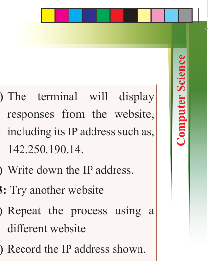
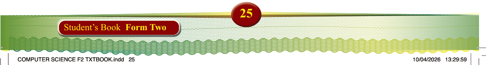

25
Student’s Book Form Two

Activity 1.12:
Identifying website IP addresses
Aim: To learn how to find the IP addresses of websites using basic
network commands.
Materials: A computer with Internet
access, Access to Command Prompt
(Windows) or Terminal (Mac/Linux),
Pen and paper or a digital notepad to
record IP addresses
Instructions: Use a computer with
Internet access to identify website IP
addresses by following these steps:
Step 1: Open the command line tool
(a) On a Windows computer, open
'Command Prompt' by typing cmd in the Start menu search
bar.
(b) On a Mac or Linux computer,
open 'Terminal' from the
Applications or Utilities folder.
Step 2: Ping a website to find its IP
Address
(a) Type the following command
and press Enter: ping www.
google.com


(b) The terminal will display
responses from the website,
including its IP address such as,
142.250.190.14.
(c) Write down the IP address.
Step 3: Try another website
(a) Repeat the process using a different website
(b) Record the IP address shown.
Step 4: Compare results
(a) Compare the IP addresses of the websites you tested.
(b) Are the IPs similar or different?
What do you observe?
Deliverables: A list of at least two website domain names and their
corresponding IP addresses and a short comparison or observation about the IP addresses found.
Client server communication
A client-server network is a fundamental
computing
model
that
enables
communication and resource sharing between devices within a network. In this model, two key components are involved: clients and servers. Clients
are devices or applications that initiate
requests for services or resources, while
servers are powerful systems responsible
for fulfilling these requests. The defining